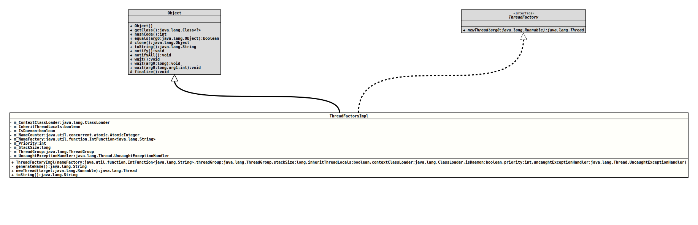

Module org.tquadrat.foundation.base
Class ThreadFactoryBuilderImpl.ThreadFactoryImpl
java.lang.Object
org.tquadrat.foundation.lang.internal.ThreadFactoryBuilderImpl.ThreadFactoryImpl
- All Implemented Interfaces:
ThreadFactory
- Enclosing class:
ThreadFactoryBuilderImpl
@ClassVersion(sourceVersion="$Id: ThreadFactoryBuilderImpl.java 1060 2023-09-24 19:21:40Z tquadrat $")
@API(status=INTERNAL,
since="0.1.0")
private static final class ThreadFactoryBuilderImpl.ThreadFactoryImpl
extends Object
implements ThreadFactory
The implementation of
ThreadFactoryBuilder.- Author:
- Thomas Thrien (thomas.thrien@tquadrat.org)
- Version:
- $Id: ThreadFactoryBuilderImpl.java 1060 2023-09-24 19:21:40Z tquadrat $
- Since:
- 0.1.0
- UML Diagram
-

UML Diagram for "org.tquadrat.foundation.lang.internal.ThreadFactoryBuilderImpl.ThreadFactoryImpl"
{kind=link}
-
Field Summary
FieldsModifier and TypeFieldDescriptionprivate final ClassLoaderThe contextClassLoaderfor the new threads.private final booleanIftrue, inherit initial values for inheritable thread-locals from the constructing thread, otherwise no initial values are inherited.private final booleantrueif the new threads are daemon thread,falseotherwise.private final AtomicIntegerThe counter for the thread name.private final IntFunction<String> The factory method for the thread names.private final intThe priority for the new threads.private final longThe desired stack size for the new threads, or zero to indicate that this parameter is to be ignored.private final ThreadGroupThe thread group for the new threads.private final Thread.UncaughtExceptionHandlerThe uncaught exception handler for the new threads; can benull. -
Constructor Summary
ConstructorsConstructorDescriptionThreadFactoryImpl(IntFunction<String> nameFactory, ThreadGroup threadGroup, long stackSize, boolean inheritThreadLocals, ClassLoader contextClassLoader, boolean isDaemon, int priority, Thread.UncaughtExceptionHandler uncaughtExceptionHandler) Creates a new instance ofThreadFactoryImpl. -
Method Summary
-
Field Details
-
m_ContextClassLoader
The contextClassLoaderfor the new threads. Can benull. -
m_InheritThreadLocals
Iftrue, inherit initial values for inheritable thread-locals from the constructing thread, otherwise no initial values are inherited. -
m_IsDaemon
trueif the new threads are daemon thread,falseotherwise. -
m_NameCounter
The counter for the thread name. -
m_NameFactory
The factory method for the thread names. -
m_Priority
The priority for the new threads. A value of -1 indicates that no priority will be set explicitly. -
m_StackSize
The desired stack size for the new threads, or zero to indicate that this parameter is to be ignored. -
m_ThreadGroup
The thread group for the new threads. Can benull. -
m_UncaughtExceptionHandler
The uncaught exception handler for the new threads; can benull.
-
-
Constructor Details
-
ThreadFactoryImpl
public ThreadFactoryImpl(IntFunction<String> nameFactory, ThreadGroup threadGroup, long stackSize, boolean inheritThreadLocals, ClassLoader contextClassLoader, boolean isDaemon, int priority, Thread.UncaughtExceptionHandler uncaughtExceptionHandler) Creates a new instance ofThreadFactoryImpl.- Parameters:
nameFactory- The factory method for the thread names.threadGroup- The thread group for the new thread; can benull.stackSize- The desired stack size for the new threads, or zero to indicate that this parameter is to be ignored.inheritThreadLocals- Iftrue, inherit initial values for inheritable thread-locals from the constructing thread, otherwise no initial values are inherited.contextClassLoader- The context class loader for the new threads; can benull.isDaemon-trueif the new threads are daemon threads,falseotherwise.priority- The priority for the new threads. A value of -1 indicates that no priority will be set explicitly.uncaughtExceptionHandler- The handler for uncaught exceptions for the new threads; can benull.
-
-
Method Details
-
generateName
Returns the name for the new thread.- Returns:
- The new thread's name.
-
newThread
- Specified by:
newThreadin interfaceThreadFactory
-
toString
-